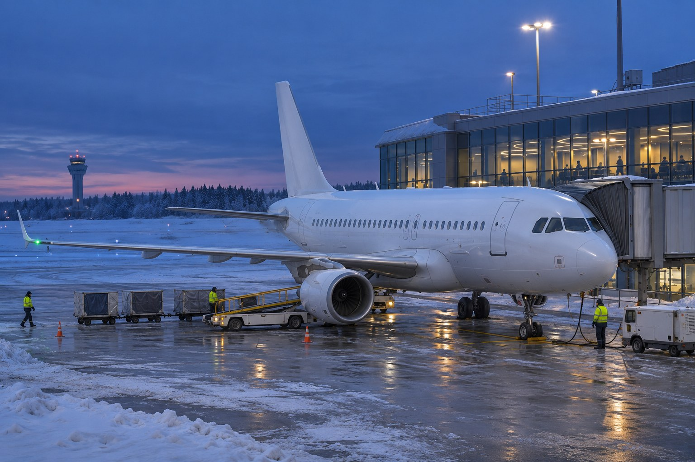

路線 / 解説
ポーター航空、11月16日からエドモントン―ラスベガス・ロスカボス線
両路線は週4便の予定です。11月3日の発表と現地16日の就航予定日を分けて確認します。

冬の旅行で乗り継ぎを減らしたい人には気になる選択肢です。ポーター航空は現地時間11月16日から、エドモントンとラスベガス、ロスカボスをそれぞれ週4便で結ぶ予定です。発表は11月3日でした。韓国時間の朝7時はエドモントンではまだ前日の午後なので、初便がすでに飛んだとは扱いません。
機材は132席のエンブラエルE195-E2で、2-2配列のため中央席がありません。無料Wi-Fi、ビール・ワイン、軽食が案内されていますが、食事はPorterReserveに含まれ、PorterClassicでは別売りです。手荷物や変更条件も運賃ごとに確認が必要です。
今回の2路線は、エドモントン発の4つのサンルート計画の仕上げです。プエルトバジャルタは11月3日に週3便、フェニックスは11月6日に毎日運航で先に始まりました。ポーターはアルバータ発初の国際線群と説明しています。
週4便は毎日運航ではありません。往路だけでなく復路の曜日も合うか、欠航時の次便までどれだけ空くかを見てください。空港コードはエドモントンYEG、ラスベガスLAS、ロスカボスSJDです。
発表にはシーズン終了日や全日程の運賃、増便時期は示されていません。就航と希望日の席・価格は別問題です。初便は運航状況を、旅行計画は往復総額と運賃規則を公式画面で確認するのが確実です。
ロスカボスは広い観光地域なので、SJD空港から宿泊先までの時間と費用も比較に入れてください。ラスベガスも深夜到着ならホテルのチェックインと交通費が重要です。
出発24時間前に便名とターミナルを再確認し、カナダへ戻るための書類も確認しましょう。路線発表は個人の入国資格を保証するものではありません。